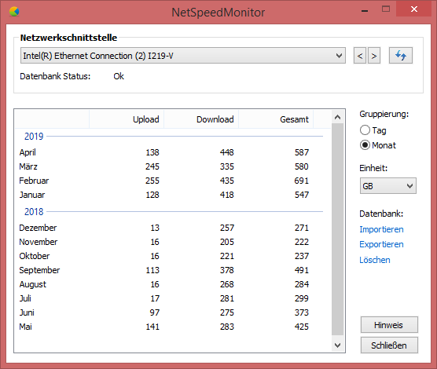

Hallo!
Vom Hörensagen her kenne ich Wireshark , habe aber selber leider noch nicht damit gearbeitetet. Hoffe du kommst damit deinem Ziel näher!

Hallo zusammen,
ich setze das Modell B529s-23a von Huawei ein. Mehrere Geräte sind über WLAN mit dem Router verbunden. Nun stelle ich relativ hohe Datennutzung fest. Kennt jemand eine Möglichkeit, wie ich feststellen kann welche Geräte wie viel Datentraffic erzeugen?
Hallo!
Vom Hörensagen her kenne ich Wireshark , habe aber selber leider noch nicht damit gearbeitetet. Hoffe du kommst damit deinem Ziel näher!
Die Geräte protokolieren i.d.R. den Traffic der Daten auch selbst ganz gut.
Schau doch mal bei den Geräten nach.
Sowohl Smartphones, Tablets aber auch Windows Geräte bieten derartige Funktionen zum Nachlesen.
Ich habe im Netzwerk einen WLAN access Point, welche mit Radius Authentifizierung und accounting arbeitet. Dadurch kann ich mir für jedes gerät am Radius Server anzeigen lassen, wie viel Daten Volumen verwendet wurde.
Welche Geräte hast du denn alle im Einsatz?
Wie @Christian_E schon gesagt hat, ist das unter Windows 10 und auch auf Smartphones relativ einfach. Vor Windows 10 kann ich dir NetSpeedMonitor empfehlen - die Software ist sehr leichtgewichtig.
Wenn du alles auf einem Punkt haben willst, bleibt dir nichts anderes übrig als dazwischen noch ein Gerät aufzustellen, dass genau diese Funktion übernimmt, sei es wie
@IT-Freak
sagt ein AP oder was auch immer

Mit Wireshark geht es sicher irgendwie aber Wireshark ist eher zum Sniffen gedacht als wie zum Data Traffic aufzeichen wer am meisten verbraucht. Was ich als hohen Verbraucher kenne ist das IPad (generation egal). NetSpeedMonitor unter Windows 10 ist klasse hab es Testweise probiert. Android Geräte (Huawei, Honor, Oneplus ect. haben es integriert) können es per App oder eben integriert anzeigen. Windows Updates die im Hintergrund laufen sind elendig was Traffic angeht da hilft in der Eingabeaufforderung: "net stop wuauserv". Ansonsten kauf dir einen Access Point der eine Monitor funktion hat. Dann siehst du wer grad viel zieht.
Bei Fragen zur Access Point beratung kannst du dich gerne an mich wenden

vor 10 Stunden schrieb MarioM:Vor Windows 10 kann ich dir NetSpeedMonitor empfehlen
Ach ja der gute alte NetSpeedMonitor, der läuft schon so ewig unbekümmert im Hintergrund, auf den hab ich ganz vergessen..

allerdings frag ich mich warum zum hack ich so viel upload hab...

Ja oft sind die Boardmittel gar nicht so übel.
Die vergisst ma gerne, weil es ja schon soviele Apps und andere Programme gibt...

11 hours ago, 5igi3lue said:
Kopierst du dinge über das Netzwerk? Das wird natürlich auch mitgerechnet

Wenn nicht, hast du vielleicht irgendwas im Hintergrund laufen?
 Oder dein Windows spammt Fehler/Diagnose oder andere Berichte im Hingerund raus
Oder dein Windows spammt Fehler/Diagnose oder andere Berichte im Hingerund raus

2 hours ago, Christian_E said:Ja oft sind die Boardmittel gar nicht so übel.
Die vergisst ma gerne, weil es ja schon soviele Apps und andere Programme gibt...")
Ja die guten alten Apps

vor 29 Minuten schrieb MarioM:Kopierst du dinge über das Netzwerk? Das wird natürlich auch mitgerechnet
Wenn nicht, hast du vielleicht irgendwas im Hintergrund laufen?
Oder dein Windows spammt Fehler/Diagnose oder andere Berichte im Hingerund raus

Ja die guten alten Apps
Danke erst mal allen, die mit guten Ratschlägen rüber kamen. Ich vermute eine Webcam, die zwar nicht für die Öffentlichkeit freigeschaltet ist, aber dennoch irgendwelche Daten ins Nirvana (oder nach China) sendet. Die Verbräuche meiner Smartphones oder PCs habe ich im Griff.
vor 23 Stunden schrieb MarioM:Welche Geräte hast du denn alle im Einsatz?
Wie @Christian_E schon gesagt hat, ist das unter Windows 10 und auch auf Smartphones relativ einfach. Vor Windows 10 kann ich dir NetSpeedMonitor empfehlen - die Software ist sehr leichtgewichtig.
Wenn du alles auf einem Punkt haben willst, bleibt dir nichts anderes übrig als dazwischen noch ein Gerät aufzustellen, dass genau diese Funktion übernimmt, sei es wie @IT-Freak sagt ein AP oder was auch immer
Ich vermute eine Webcam, die zwar nicht für die Öffentlichkeit freigeschaltet ist, aber dennoch irgendwelche Daten ins Nirvana (oder nach China) sendet. Die Verbräuche meiner Smartphones oder PCs habe ich im Griff.
Alles klar.
Ja Webcams können da echt Ressourcenfresser werden....
Bin gespannt, was es letztendlich dann war.
4 hours ago, cbruch said:Ich vermute eine Webcam, die zwar nicht für die Öffentlichkeit freigeschaltet ist, aber dennoch irgendwelche Daten ins Nirvana (oder nach China) sendet. Die Verbräuche meiner Smartphones oder PCs habe ich im Griff.
Musstest du die Webcam mit irgendeinem Cloud Account oder so einrichten? Oder generell mit irgendeinem Account? Denn das wäre ein hinweis, dass er eventuell die Daten irgendwohin schickt

Es handelt sich um die "ominöse" App "YCC365". Ich habe zwar den Cloud Server deaktiviert, aber wer weiß was dennoch passiert. Ich finde keine weitere Möglichkeit da was zu deaktivieren.
18 hours ago, cbruch said:Es handelt sich um die "ominöse" App "YCC365". Ich habe zwar den Cloud Server deaktiviert, aber wer weiß was dennoch passiert. Ich finde keine weitere Möglichkeit da was zu deaktivieren.
Alles klar - aber das deaktivieren war mal gut
 Beobachte mal weiter, wie das mit dem Traffic weitergeht ... Wenns immer noch die Webcam ist, dann würde ich auf eine andere umsteigen - man will ja nicht, dass seine Webcam Bilder dann irgendwo im Internet zu finden sind ...
Beobachte mal weiter, wie das mit dem Traffic weitergeht ... Wenns immer noch die Webcam ist, dann würde ich auf eine andere umsteigen - man will ja nicht, dass seine Webcam Bilder dann irgendwo im Internet zu finden sind ...
Am 12.4.2019 um 09:38 schrieb MarioM:Kopierst du dinge über das Netzwerk? Das wird natürlich auch mitgerechnet
Danke nochmal für den Tipp
@MarioM
, das ist auf jeden Fall im eigenen Netzwerk. Bin da immer wieder mal am Experimentieren mit zwei Synology DS und die großen Datenmengen verursachen natürlich sehr schnell solche Uploadmengen..

{kind=link}